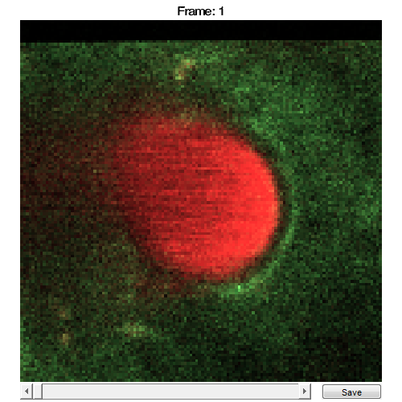

SCIM_Tif
Store raw data from ScanImage Tif images
Contents
Usage
OBJ = SCIM_Tif(FILENAME, CHS, CAL)
Arguments
- FILENAME is the original filename (including the path) of this SCIM_Tif object.
- CHS is a scalar structure that contains information about the meaning of the image channels.
- CAL is a scalar CalibrationPixelSize object.
Details
SCIM_Tif objects are used to contain all raw image data and metadata from ScanImage Tif images. This class relies on and includes existing code provided with the ScanImage microscope software. For more information on ScanImage, please visit http://www.scanimage.org, or refer to Pologruto et al. (2010), BioMed Eng OnLine 2(1):1-9.
See Also
Examples
The following examples require the sample images and other files, which can be downloaded manually, from the University of Zurich website (http://www.pharma.uzh.ch/en/research/functionalimaging/CHIPS.html), or automatically, by running the function utils.download_example_imgs().
Create a SCIM_Tif object interactively
The following example will illustrate the process of creating a SCIM_Tif object interactively. It is possible to do so by using the from_files() method, rather than the constructor (as is demonstrated in this section).
% Call the SCIM_Tif constructor
st001 = SCIM_Tif()
Use the interactive dialogue box to select the raw image file xsectscan_scim.tif, which should be located in the subfolder tests>res, within the CHIPS root directory:.

Use the interactive dialogue box to select the dummy calibration (calibration_dummy.mat):

The next stage is to define the 'meaning' of the image channels. The first channel represents a cellular sensor, and the second channel represents the blood plasma. Press six and enter, followed by one and then enter, to complete the selection.
----- What is shown on channel 1? -----
>> 0) <blank>
1) blood_plasma
2) blood_rbcs
3) Ca_Cyto_Astro
4) Ca_Memb_Astro
5) Ca_Neuron
6) cellular_signal
7) FRET_ratioAnswer: 6
----- What is shown on channel 2? -----
>> 0) <blank>
1) blood_plasma
2) blood_rbcs
3) Ca_Cyto_Astro
4) Ca_Memb_Astro
5) Ca_Neuron
6) cellular_signal
7) FRET_ratioAnswer: 1
We have now created a SCIM_Tif object interactively.
st001 =
SCIM_Tif with properties:
filename: 'C:\...'
isDenoised: 0
isMotionCorrected: 0
metadata_original: [1x1 struct]
name: 'xsectscan_scim'
rawdata: [4-D uint16]
t0: 0
metadata: [1x1 Metadata]The process is almost exactly the same to create an array of SCIM_Tif objects; when the software prompts you to select one or more raw images, simply select multiple images by using either the shift or control key.
Create a SCIM_Tif object without any interaction
% Specify the full path to the raw image object fnST002 = fullfile(utils.CHIPS_rootdir, 'tests', 'res', ... 'xsectscan_scim.tif'); % Specify the channels relevant for this raw image channels = struct('cellular_signal', 1, 'blood_plasma', 2); % Load the CalibrationPixelSize object fnCalibration = fullfile(utils.CHIPS_rootdir, 'tests', 'res', ... 'calibration_dummy.mat'); calibration = CalibrationPixelSize.load(fnCalibration); % Create the SCIM_Tif object without any interaction st002 = SCIM_Tif(fnST002, channels, calibration); % View the SCIM_Tif object st002.plot()
Opening xsectscan_scim.tif: 100% [=================================]